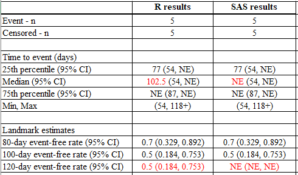

R vs SAS - Kaplan Meier and Cox-proportion hazards modelling
Comparison of SAS vs R
The following table shows the options available in SAS and R for Kaplan Meier and Cox Proportional Hazards modelling, the capabilities of each language, and whether or not the results from each language match.
| Analysis | Supported in R | Supported in SAS | Results Match | Notes |
|---|---|---|---|---|
| Kaplan Meier with confidence intervals using log-log method | Yes (using the option conf.type = “log-log”) | Yes (Default) | Mostly | 1) Survival estimates can disagree when last event is censored and survival estimate does not cross the percentile being estimated. 2) Survival estimates at time X can disagree when the time X is after the last observed censored time |
| Kaplan Meier with confidence intervals using log method | Yes (Default) | Yes (using the option conftype=log) | Mostly | As above. |
| Cox Proportional Hazards Model using breslow method for ties | Yes (using the option ties=“breslow”) | Yes (Default) | Yes | |
| Cox Proportional Hazards Model using efron method for ties | Yes (Default) | Yes (using the option ties=efron) | Yes | |
| Cox Proportional Hazards Model using exact partial likelihood method for ties | Yes (using the option ties=“exact”) | Yes (using the option ties=“discrete”) | Yes | The option ties=“exact” in SAS uses the exact marginal likelihood which is not available in R |
Results from the examples shown for R here and SAS here were compared below.
Comparing the non-stratified model results side-by-side, the CIs for the quartile estimates and landmark estimates are different between R and SAS. HR and CI also have slight differences.
Reason 1: Cox Regression Handling of Tied Survival Times
The default methods for handling ties in a Cox regression model are different which can lead to a different result for the Hazard ratio and associated confidence interval.
R uses “efron” by default. SAS uses “breslow” by default. Both R and SAS are able to change these default options. By making the changes to the code below, we can force R to use “breslow” to match SAS, or SAS to use “efron” to match R. When the software use the same methods, then we obtain an identical HR and CI.
- R: change method for ties to use “breslow”
fit.cox <- coxph(Surv(LENFOLY, FSTAT) ~ AFB, ties = "breslow", data = dat)- SAS: change method for ties to use “efron”
proc phreg data=dat;
class afb;
model lenfol*fstat(0) = afb/rl ties = efron;
run;If there are no tied event times, then the methods are equivalent.
The Breslow approximation is the easiest to program and hence it historically became the first option coded for almost all software. It then ended up as the default option when other options were added in order to maintain “backwards compatibility”. The Efron option is more accurate if there are a large number of ties, and it was therefore selected as the default option in R. In practice the number of ties is usually small, in which case all the methods are statistically indistinguishable.
From the arguments of coxph in R, there are three possible choices for handling tied event times ‘ties=breslow’, ‘ties=efron’, or ‘ties=exact’. This last option is an exact partial likelihood approach, and corresponds to the “discrete” method in SAS. See here for more detail. (For {survival} versions prior to 3.2-14, the options are ‘ties=breslow’, ‘ties=efron’, or ‘ties=logit’.)
Reason 2: Kaplan Meier Median Survival Confidence Intervals
The default methods for calculation of the confidence interval of a KM estimator are different in the two languages (for example, for calculation of the CI associated with the Median Survival estimate, the 25th percentile and the 75th percentile).
R uses “log” by default, and SAS uses “log-log” by default. As shown below, using ‘conf.type’ option, R can be forced to use the “log-log” method to match SAS. Alternatively, using the ‘conftype=’ option, SAS can be forced to use the “log” method to match R.
- R: change to “log-log”
fit.km <- survfit(Surv(LENFOLY, FSTAT) ~ AFB, conf.type = "log-log", data = dat)- SAS: change to “log”
proc lifetest data=dat conftype=log;
time lenfoly*fstat(0);
strata afb;
run;“log-log” prevents the problem of having confidence intervals of >1 or <0, which might happen if using “log” transformation. However, both R and SAS will clip the interval at [0, 1] and report a bound >1 as 1 and <0 as 0.
From a reference: The appeal of the log-log interval is clear, but the log-scale interval has the advantage of variance stabilization. As a result, simulation studies have generally found it to have better (closer to nominal) coverage; for this reason, it is the default in the survival package.
Now if we change the confidence interval type in SAS to “log” and tie handling to “efron”, the results will be identical to the results in R.

Below is the side-by-side comparison for stratified analysis with default methods in SAS matched to R’s, the results are also identical.

Reason 3: Convergence Criteria in Cox Proportional Hazards Model
Another source of discrepancy between R and SAS in Cox models can arise from the default convergence criteria used by the two software packages.
In R, the survival::coxph() function has a default convergence criterion for the relative change in log partial likelihood set at 1e-9. On the other hand, SAS’s PHREG procedure uses a default convergence criterion for the relative gradient convergence set at 1e-8. This discrepancy in the convergence criteria can lead to slight differences in the hazard ratios (HR) obtained from the two software packages.
To achieve comparable results, it is possible to adjust the convergence criteria in SAS to match the more stringent criteria used by R. This can be done by specifying the fconv option in the model statement within PHREG to change the criteria to relative function convergence with a value of 1e-9.
- R: default convergence criterion
fit.cox <- coxph(Surv(LENFOLY, FSTAT) ~ AFB, data = dat)- SAS: adjust convergence criterion
proc phreg data=dat;
class afb;
model lenfol*fstat(0) = afb / rl fconv = 1e-9;
run;By making this adjustment, the hazard ratios obtained from SAS will align more closely with those from R or even achieve bitwise reproducibility.
The convergence criterion details are described in their documentation:
Other Cases Where Discrepancies Are Found
Now we look at other cases when the data has some special type which causes a mismatch between SAS and R. Suppose a dataset has 10 observations, and the first 5 are all events, and the last 5 are all censored.
test <- tibble(time = c(54, 75, 77, 84, 87, 92, 103, 105, 112, 118),
status = c(1, 1, 1, 1, 1, 0, 0, 0, 0, 0))
test# A tibble: 10 × 2
time status
<dbl> <dbl>
1 54 1
2 75 1
3 77 1
4 84 1
5 87 1
6 92 0
7 103 0
8 105 0
9 112 0
10 118 0Differences Observed in the KM Estimators
Suppose we are interested to know the 25%, 50% and 75% quartile estimates, and the day 80, 100, and 120 estimates.
Below is the R code:
fit.km <- survfit(Surv(time, status) ~ 1, conf.type = "log-log", data = test)
## quantile estimates
quantile(fit.km, probs = c(0.25, 0.5, 0.75))
## landmark estimates at 80, 100, 120-day
summary(fit.km, times = c(80, 100, 120), extend = T)Below is the SAS code:
proc lifetest data=dat outsurv=_SurvEst timelist= 80 100 120 reduceout stderr;
time lenfoly*fstat(0);
run;Below is the side-by-side comparison:

Reasons
The reasons for the differences are because:
Reason 1: Survival estimate does not cross the 50% percentile.
The kth quantile for a survival curve S(t) is the location at which a horizontal line at height p= 1-k intersects the plot of S(t) as shown in the KM curve below. Since S(t) is a step function, it is possible for the curve to have a horizontal segment at exactly 1-k, in which case the midpoint of the horizontal segment is returned.
For example, using the data above, the survival probability is exactly 0.5 at time=87 and remains at 0.5 until the last censored observation at 118.

When using R, the median is the smallest time which survival estimate is <= 0.5 –> (87+118) / 2 = 102.5. However, SAS searches the smallest time which survival estimate is < 0.5, which does not exist in this dataset, so it gives “NE” (Not evaluable).
pl <- survminer::ggsurvplot(fit.km,
conf.int = TRUE,
ggtheme = theme_light())
pl$plot + geom_hline(yintercept = 0.5, color = "black", linetype = "solid")
summary(fit.km)Reason 2: Last event censored and prior to the required landmark estimate.
For the 120-day event-free estimate, SAS considers that 120 days is beyond the maximum observed day in the data (which was a censored event at time =118). Therefore, SAS considers this as Unknown and returns a result of “NE” (Not-evaluable). However, R uses the rate at last observed censored date to estimate the 120-day event free rate. As the event-free estimate at time of the last censored event at 118 was 0.5 (0.184, 0.753), R makes the assumption that this is the best estimate for the event-free rate at Time =120.
If we change the last observation in the dataset to be an event (instead of censored), R and SAS will both give 0 for the event-free survival estimate, because it is for sure that all subjects did not survive beyond 120 days.
test <- tibble(time = c(54, 75, 77, 84, 87, 92, 103, 105, 112, 118),
status = c(1, 1, 1, 1, 1, 0, 0, 0, 0, 1))
test# A tibble: 10 × 2
time status
<dbl> <dbl>
1 54 1
2 75 1
3 77 1
4 84 1
5 87 1
6 92 0
7 103 0
8 105 0
9 112 0
10 118 1
References
Breheny P. “Inference for the Kaplan-Meier Estimator.” https://myweb.uiowa.edu/pbreheny/7210/f15/notes/9-10.pdf
Breslow, N. E. (1974) “Covariance Analysis of Censored Survival Data.” Biometrics 30:89–99.
Efron, B. (1977. “The Efficiency of Cox’s Likelihood Function for Censored Data.” Journal of the American Statistical Association 72:557–565.
Emmerson J. and Brown J. M. “Understanding Survival Analysis in Clinical Trials.” Clinical Onclogy 33:12-14.
Franklin D. “Our Survival Confidence Intervals are not the Same!” PharmaSUG 2014 - Paper SP10. https://www.pharmasug.org/proceedings/2014/SP/PharmaSUG-2014-SP10.pdf
Hertz-Picciotto I. and Rockhill B. (1997) “Validity and efficiency of approximation methods for tied survival times in Cox regression.” Biometrics 53:1151-1156.
Hosmer, D.W. and Lemeshow, S. and May, S. (2008) “Applied Survival Analysis: Regression Modeling of Time to Event Data: Second Edition.” John Wiley and Sons Inc., New York, NY